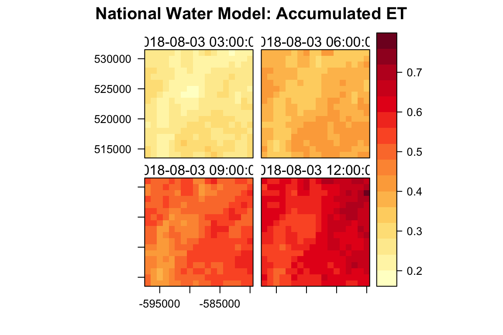
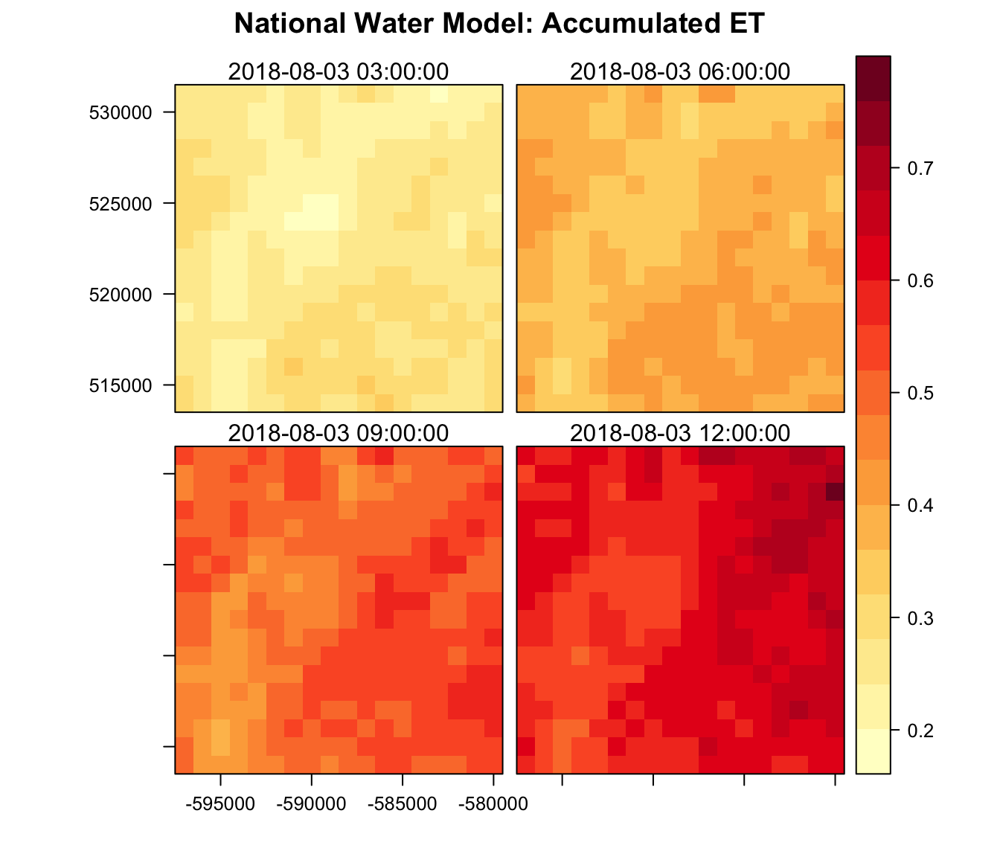
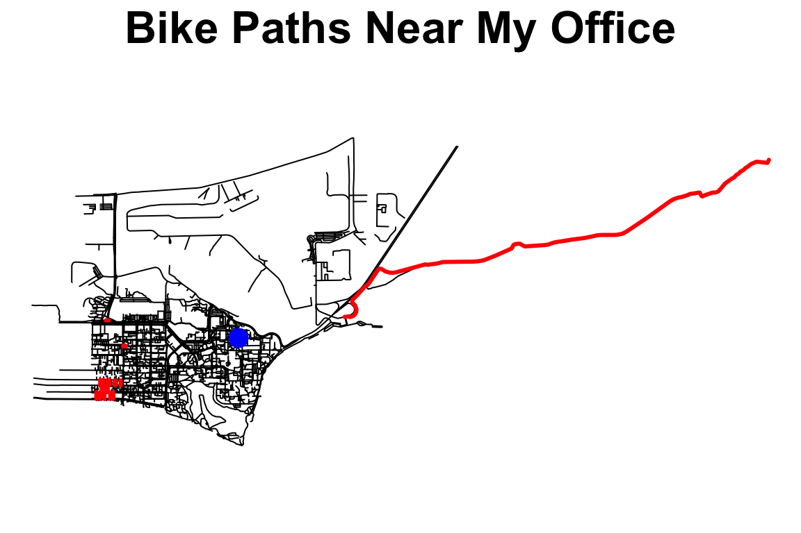
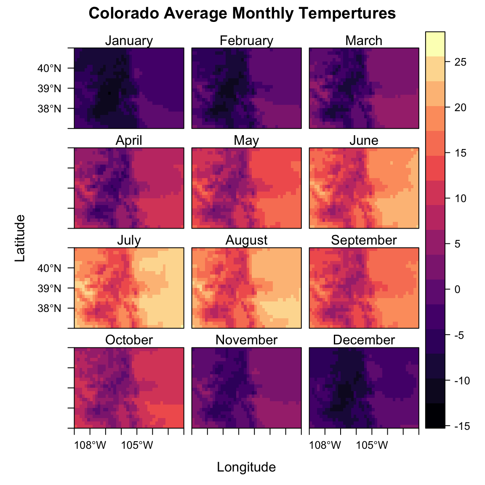
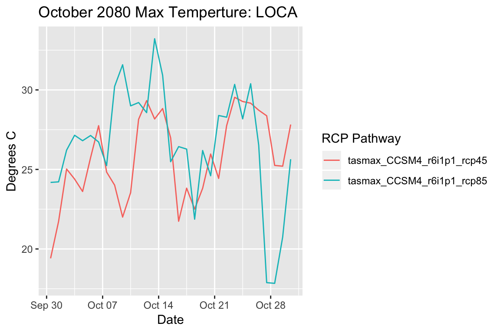

The AOI package was not developed for isolated use but rather to ease the use of many great spatial packages in the R ecosystem. Here, a few case studies will be demonstrated but it should be emphasized these represent only a small fraction of the packages and services available. If you find a use or a need please file an issue to get it included!
The soilDB package provides streamlined access to the NCSS soil databases. fetchKSSL gets soil characterization and morphologic data from a bounding box from the KSSL database. These calls must be provided in [xmax,ymin,xmin,ymax] order setting up a nice use case for bbox_st. Here, we want to find the KSSL data for 30 mile by 30 mile squared region centered on Temecula California.
bb = getAOI(clip = list("Temecula" , 30, 30)) %>% bbox_st()
soils = soilDB::fetchKSSL(bbox=c(bb$xmax, bb$ymin, bb$xmin, bb$ymax))
str(soils, max.level = 2)
#> Formal class 'SoilProfileCollection' [package "aqp"] with 7 slots
#> ..@ idcol : chr "pedon_key"
#> ..@ depthcols : chr [1:2] "hzn_top" "hzn_bot"
#> ..@ metadata :'data.frame': 1 obs. of 1 variable:
#> ..@ horizons :'data.frame': 100 obs. of 71 variables:
#> ..@ site :'data.frame': 16 obs. of 32 variables:
#> ..@ sp :Formal class 'SpatialPoints' [package "sp"] with 3 slots
#> ..@ diagnostic:'data.frame': 0 obs. of 0 variablesThe HydroData package offers quick access to geospatial earth systems data for an area of interest. In total the packages offers access to 20+ data sources as well as visualization functions. Here we can chain an AOI call for the 100sqmile region surrounding UCSB to a series of HydroData function to the HydroData calls to get NHD flowlines. NHD waterbodies and USGS NWIS stations.
AOI = getAOI(list("UCSB", 10, 10)) %>%
HydroData::findNHD() %>%
HydroData::findWaterbodies() %>%
HydroData::findGHCN() %>%
HydroData::explore()
#> Returned object contains: 100 nhd flowlines
#> Returned object contains: 11 NHD waterbodies
#> Returned object contains: 6 unique GHCN station(s)Rayshader is a package for generating beautiful hillshade maps of elevation matrices. Here we pipe the AOI seen above to HydroData findNED (find data from the USGS National Elevation Dataset) to get a elevation tiff to pass to the rayshader functionalities.
library(rayshader)
AOI = getAOI(clip = list("UCSB", 10, 30)) %>% HydroData::findNED()
ned = matrix(raster::extract(AOI$NED,raster::extent(AOI$NED),buffer=1000),
nrow=ncol(AOI$NED),ncol=nrow(AOI$NED))
ned %>%
sphere_shade(texture = "imhof1") %>%
add_water(detect_water(ned), color="desert") %>%
add_shadow(ray_shade(ned)) %>%
add_shadow(ambient_shade(ned)) %>%
write_png(filename = paste0(getwd(), "/rayshade_ex.png"))
NWM is a new package interfacing with the NOAA National Water Model. Here we use the AOI package to define and the 100sqmile region surrounding Devils Tower, South Dakota and extract the modeled evapotranspiration for four timeslices:
files = nwm::getFilelist(type = 'land', date = "20180803", t = 0, f = c(3,6,9,12))
AOI = getAOI(clip = list("Devils Tower, WY", 10, 10)) %>% nwm::downloadNWM(files, param = 'accet')
rasterVis::levelplot(AOI$accet,
main = "National Water Model: Accumulated ET",
names.attr = as.character(nwm::getGridTime(AOI$accet)),
col.regions = colorRampPalette(brewer.pal(9,"YlOrRd")))
FedData is a useful package for automatically downloading federal datasets. Here we chain chain the get_ssurgo function to an AOI call to quickly get a soils map from the SSURGO database for the 100sqmile regions surrounding Boulder, Colorado.
AOI = getAOI(clip = list("Boulder", 10, 10)) %>% FedData::get_ssurgo(label = "test")
ggplot() +
geom_polygon(data = AOI$spatial, aes(x = long, y = lat, group = group, fill = id), color = 'gray') +
guides(fill=FALSE) +
labs(title = "Boulder Soils MUSYM") +
theme(plot.title = element_text(size=30))
#> Regions defined for each PolygonsOpen Street Map provides one of the most extensive databases/cartographic representations of the world and the osmdata packages offers an interface to this resource. Here we look at answering the question “Where are the bike paths near my office in Ellison Hall?”.
office = geocode("UCSB")
AOI = getAOI(clip = list(office$lat, office$lon, 2, 2)) %>% bbox_st()
q0 = opq(bbox = c(AOI$xmin, AOI$ymin, AOI$xmax, AOI$ymax)) %>%
add_osm_feature (key="highway") %>%
osmdata_sp()
roads = q0$osm_lines
{
par(mar=c(.1,.1,2,.1))
plot(roads, main = "Bike Paths Near My Office", cex.main = 2)
plot(roads[roads$bicycle =="yes", ], col= "red", add = T, lwd = 3)
points(x = office$lon, y = office$lat, col = 'blue', cex = 2, pch = 16)
}
The WorldClim dataset offers a set of global climate layers and ships with the raster package. Here we download and sub set the mean temperature data for the state of Colorado.
r <- raster::getData("worldclim", var = 'tmean', res=10)
rr = raster::crop(r, getAOI(state = "CO"))
rasterVis::levelplot(rr/10,
names.attr = month.name,
main = "Colorado Average Monthly Tempertures")

The USGS geoknife package provides a unique interface to large-scale climate datasets. One example of these is the LOCA Downscaled climate product. Here, we are interested in finding predicted maximum daily temperture values for the Santa Barbara area in October of 2080 under two climate scenarios - RCP 4.5 and 8.5. This example is basic and developed to highlight the use of AOI with the geoknife package. A more in depth example of the geoknife package can be found here.
stencil = AOI %>% sp::spTransform("+proj=longlat +datum=WGS84") %>% simplegeom()
fabric <- webdata(url = 'http://cida.usgs.gov/thredds/dodsC/loca_future',
variables = c("tasmax_CCSM4_r6i1p1_rcp45", "tasmax_CCSM4_r6i1p1_rcp85"),
times = c('2080-10-01', '2080-10-31')
)
knife <- webprocess(STATISTICS = "MEAN", wait = TRUE)
job <- geoknife(stencil, fabric, knife)
xx = result(job)
ggplot(xx) +
geom_line(aes(x = xx$DateTime, y = xx$ID1, color = xx$variable)) +
labs(title = "October 2080 Max Temperture: LOCA",
x = "Date",
y = "Degrees C",
color = "RCP Pathway")